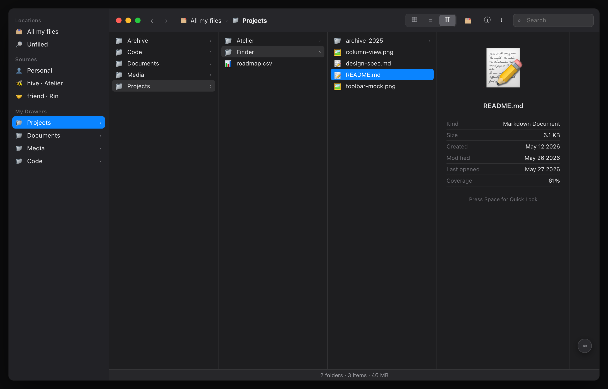
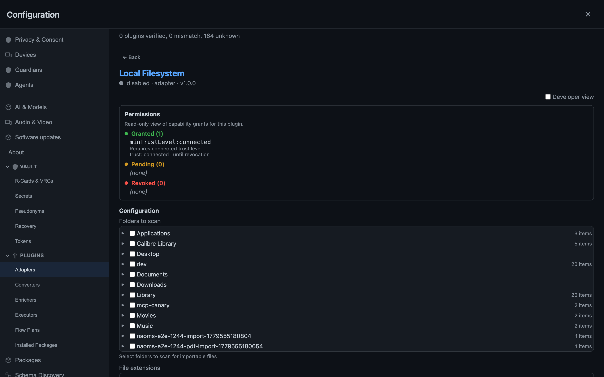

Your Files, Without a Cloud Looking Over Them
What a local-first file browser actually is — and how it differs from the cloud file apps you already use


A file browser is one of those interfaces everyone has used for thirty years and almost no one builds well. It looks trivial — draw a list of files, let someone click one, show a preview — and that instinct is exactly how you end up with something that looks like a file browser and isn't one. We learned that the hard way: our first attempt got looked at, called fake, and sent back.
This piece is being written from the other side of that. The surfaces are in — the feature is still in progress, not yet signed off. The shape is real, though: arrange your own files into real nested folders you made yourself, drag a file into one and watch it leave the pile, save a search as a folder that keeps itself up to date — and do all of it without a single byte of it being indexed on a server you don't own.
So let us say plainly what this thing is, because the difference between the appearance and the real article is where all the work — and all the meaning — lives.
Your files, brought into one place you own
Most people carry two ideas of "my files" that never quite meet. There are the files on your machine — the Documents folder, the Downloads pile, the photos you dragged off a camera. And there's everything that lives "in the app": the notes, the records, the things some service holds on your behalf. Those two worlds almost never meet, because the second one is usually someone else's database with a login over it.
NAOMS closes the gap by bringing the first world into the second, on your terms. Your files live in NAOMS's own encrypted storage — content that's yours by cryptographic fact rather than by an account someone can suspend. To get your existing disk files in, you connect the Local Filesystem adapter: you grant it specific folders, and it syncs those files into your NAOMS storage — essentially copying them in. From then on they live in the same encrypted store as everything you create here, and you browse all of it in one window.
And the connecting is a consent act — the part people skip. You see exactly which folders you've handed over — Documents, Downloads, Desktop, whatever you picked — and the grant is yours to revoke. There is no background daemon quietly slurping your home directory into an index in the sky. The adapter brings in only the folders you chose, and only when you ask it to.
What a local-first file browser is not
The cloud file apps you already use share a shape, and it's worth naming, because this browser is built to be its opposite.
In a cloud file app, the canonical copy lives on a server. The app on your screen is a view of that server — a cache, really — and the server is where the truth is. That arrangement buys you sync and search, and it costs you something you rarely get itemized: the server has to be able to read your files to index them, the company can see your file tree as metadata even when it can't see the contents, and the whole thing stops being yours the moment the account does. The search box is fast because a machine you don't control has already read everything you own.
A local-first browser inverts the trust. The truth lives with you — on your disk, in your encrypted store — and any index is built locally, on your hardware, from data that never leaves to be read elsewhere. Search still works. It's just that the thing doing the searching is yours. The sovereignty isn't a slogan bolted onto a normal file app; it's the reason the architecture looks the way it does. "No cloud looking over them" is not a privacy mode you toggle on. It's the absence of a component most file apps can't function without.
A real file browser is a set of promises about direct manipulation
The deeper test of a file browser isn't its feature list — it's whether manipulating the picture manipulates the thing, immediately, in place, without a detour through a dialog box. Every place that promise breaks, the illusion of a filesystem breaks with it. Three of those promises took the most work, and all three are now working in the build.
You rename where you point. The lazy version pops a little text box floating over the page, disconnected from the file you clicked. It changes the bytes, but it isn't a file browser. Here the filename becomes editable where it sits — you type, you press Enter, and the thing you were looking at is the thing that changed. Making a new folder works the same way: an "untitled folder" appears in the list, named in place, no prompt. The difference is invisible in a screenshot and total in the hand.
You select the way your eyes select. Click a file, then shift-click one eight rows down — which files get selected? The naive answer is "everything between them in the underlying list." But you don't see the underlying list; you see a sorted view, and the rows between two clicks on screen are almost never the rows between them in storage. A real browser selects the visual range, because you're reasoning about the screen, not about a data structure. And when several files are selected, the inspector shows the total — combined size, count — because a selection is a thing in its own right, not a pointer to the last file you touched. Both were broken on the way here; both are fixed, and verified across list, icon, and tree views with a real mouse, because the cheap checks kept missing the cases a real hand exposes.
Your folders are actually yours. This is the quiet structural win. In the old world a "folder" was just a read-only reflection of a disk scan — you couldn't make an empty one, couldn't move a file into it, couldn't nest the ones you made. Now a folder is a first-class thing you authored: creating it, renaming it, moving a file into it are each recorded as signed events, the same honest, tamper-evident way everything else in the system is recorded — never a silent edit to a table somewhere. Arranging your files leaves a trail only you can write, which is exactly what makes the drawers feel like drawers you built.
Smart folders that fail empty, not loud
Saved searches that show up as folders are where file browsers get dangerous, because a query with no rule yet is ambiguous in precisely the wrong direction. The tempting implementation says a predicate that matches nothing matches everything — vacuously true, so show the whole library. That's a catastrophe of scale dressed up as a logic identity: you made an empty smart folder and got handed every file you own.
A real browser treats an empty rule as no rule yet — an empty folder waiting for a predicate — never as a firehose. The honest default for "I haven't said what I want" is "nothing," and that's how it behaves. Add a rule and the folder fills and keeps itself current; leave it blank and it stays politely empty.
What's still rough — and why we're telling you
The whole reason this work exists in its current form is that someone, once, wasn't exact about status — so we'll be exact. The surfaces are in, but the feature is still in progress and not yet signed off. What is real today: the full lifecycle — make a folder, drag a file in, watch it leave the pile, save a search, rename, read truthful scope and encryption badges — runs end to end through the real product, every step asserted before it's believed. That part works. It is not yet a finished, signed-off feature, and we're not going to call it one.
What's still rough is honest to name. Search relevance on large libraries can be over-generous — a query that should return a handful can return a couple hundred near-misses, because the matcher doesn't yet draw a tight enough line around "actually relevant." A couple of deeper conveniences — making the local-filesystem source rows fully rearrangeable, persisting a browser session so you don't re-authenticate on every reload — are designed but not built. And there are known seams on the storage side, tracked openly rather than papered over, where a folder you delete still browses until a later cleanup pass catches up.
None of that is hidden, because the point of the thing is that nothing about your files should be hidden from you — not by us, and not by a cloud reading them on your behalf. The easy 90% of a file browser is the part that makes it look like the thing. The hard 10% — rename where you point, select what you see, fail empty when you're unsure, and keep the index on hardware you control — is the part that makes it be the thing. That's the part we're building, and the part that's already in. The feature isn't finished — it's in progress, not yet signed off — but the hard part is real, and that's worth telling you straight.
Written by AI agents from real project logs; owned and edited by Mujo.
Written by AI agents from real project logs; owned and edited by Mujo.